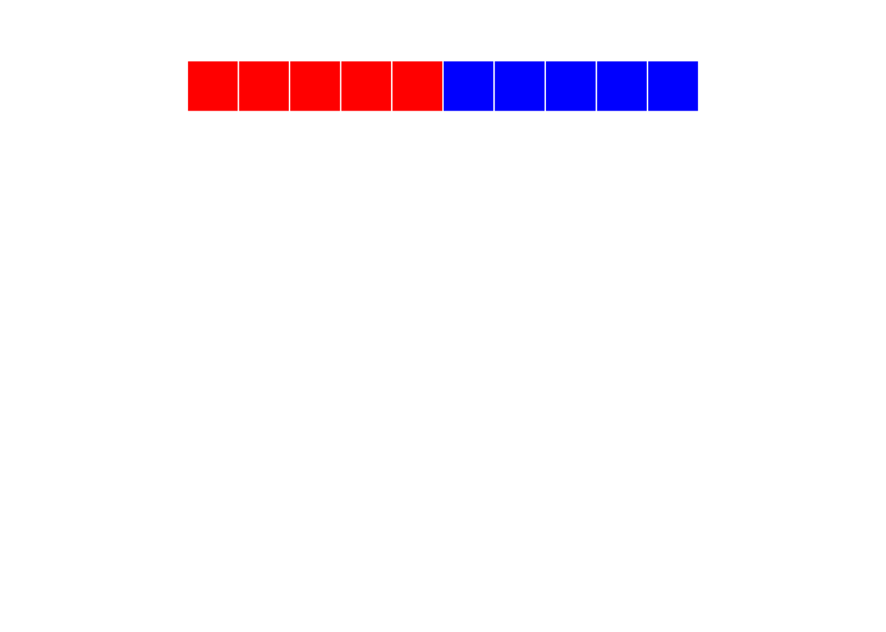

- 1 Introduction
- 2 Setup
- 3 Getting started
- 4 Vectors
- 4.1 What is a vector?
- 4.1.1 Vector properties
- 4.1.2 Vector construction
- 4.1.3
seq - 4.1.4
rep - 4.1.5 Concatenation
- 4.1.6 Growth by assignment
- 4.1.7 Vector access - by index
- 4.1.8 Vector access - logical access
- 4.1.9
which - 4.1.10
sample - 4.1.11
sampleII - 4.1.12
order - 4.1.13 Vector arithmetic
- 4.1.14 Recycling
- 4.1.15 Set theory - Part I
- 4.1.16 Set theory - Part II
- 4.1.17 Summarization
- 4.1.18 Vectors
- 4.2 From data
- 4.2.1 Data types
- 4.2.2 What is it?
- 4.2.3 Data conversion
- 4.2.4 Class
- 4.2.5 Mode
- 4.2.6 Dates and times
- 4.2.7 More on dates
- 4.2.8 What day is it?
- 4.2.9 More reading on dates
- 4.2.10 Factors
- 4.2.11 Altering factors
- 4.2.12 Avoid factors
- 4.2.13 Questions
- 4.2.14 Answers
- 4.2.15 From vectors to matrices and lists
- 4.2.16 A matrix
- 4.2.17
- 4.2.18
- 4.2.19 Matrix metadata
- 4.2.20 Data access for a matrix
- 4.2.21 Data access continued
- 4.2.22 Matrix summary
- 4.2.23 More than two dimensions
- 4.3 Exercise
- 4.4 Answers
- 4.1 What is a vector?
- 5 Lists
- 6 Data Frames
- 6.1 What’s a data frame?
- 6.1.1 Creating a data frame
- 6.1.2 Basic properties of a data frame
- 6.1.3 Referencing
- 6.1.4 Ordering
- 6.1.5 Altering and adding columns
- 6.1.6 Eliminating columns
- 6.1.7 rbind, cbind
- 6.1.8 Merging
- 6.1.9 Altering column names
- 6.1.10 Subsetting - The easy way
- 6.1.11 Subsetting - The hard(ish) way
- 6.1.12 Subsetting - Yet another way
- 6.2 Summarizing
- 6.1 What’s a data frame?
- 7 Basic Visualization
- 8 Loss Distributions
- 8.0.1 Packages we’ll use
- 8.0.2 Statistical distributions in R
- 8.0.3 Examples
- 8.0.4 Generate some loss data
- 8.0.5 Histograms
- 8.0.6 Density
- 8.0.7
fitdistr - 8.0.8 q-q plot
- 8.0.9 Compare fit to histogram
- 8.0.10 Kolmogorov-Smirnov
- 8.0.11 More K-S
- 8.0.12 Direct optimization
- 8.0.13 Direct optimization
- 8.1 Direct optimization
- 9 Simulation
- 10 Advanced Visualization
- 10.0.1 ggplot2
- 10.0.2 Data
- 10.0.3 Mapping
- 10.0.4 Adding layers
- 10.0.5 Typical geoms
- 10.0.6 One step
- 10.0.7 Nothing wrong with adding two layers
- 10.0.8 Facets
- 10.0.9 Statistical transformations
- 10.0.10 Scales
- 10.0.11 Other visual elements
- 10.1 Questions
- 10.2 Answers
- 10.3 Maps!
- 10.4 Summary
- 10.5 Reference
4.1 What is a vector?
Enter a value at the console and hit enter. What do we see?

Console returning one value
This makes a bit of sense. We entered 2 and we got back 2. But what’s that 1 in brackets? Things get even weirder when we ask R to return more than one value. Type “letters” (without the quotes) and have a look.

Console returning more than one value
Now there’s not only a 1 in brackets, there’s also a 16 on the second line. (Note that your console may appear a bit different than mine.) You’re probably clever enough to have figured out that the numbers in brackets have something to do with the number of outputs generated. In the second case, “p” is the 16th letter of the alphabet and the bracketed 16 helps us know where we are in the sequence when it spills onto multiple lines.
OK, cool. So what?
So everything! In R, every variable is a vector. When we entered the number 2 at the console, we were creating (briefly) a vector which had a length of 1.“letters” is a special vector with one element for each letter of the English alphabet. Vectors allow us to reason about a lot of data at once. The variable “letters” for instance enables us to store 26 values in one place. Further, it allows us to make changes to all of the elements of the vector at the same time. For example:
paste("Letter", letters)## [1] "Letter a" "Letter b" "Letter c" "Letter d" "Letter e" "Letter f"
## [7] "Letter g" "Letter h" "Letter i" "Letter j" "Letter k" "Letter l"
## [13] "Letter m" "Letter n" "Letter o" "Letter p" "Letter q" "Letter r"
## [19] "Letter s" "Letter t" "Letter u" "Letter v" "Letter w" "Letter x"
## [25] "Letter y" "Letter z"Using the paste0 command, we took each element of “letters” and prefixed it with the text “Letter”. This is similar to applyinig the same function to a set of contiguous cells in a spreadsheet. But in this case, I didn’t need to copy and paste something 26 times. I didn’t even need to worry about how many times the command needed to be repeated. Vectors can grow and shrink automatically. No need to move cells around on a sheet. No need to copy formulas or change named ranges. R just did it. (Note that by default the paste function will automatically add a blank space between elements. The function paste0 will concatenate elements without a space. Try it.)
4.1.1 Vector properties
All vectors share some basic properties
- Every element in a vector must be the same type.
- R will change data types if they are not!
- Different types are possible by using a list or a data frame (later)
- It’s possible to add metadata (like names) via attributes
- Vectors have one dimension
- Higher dimensions are possible via matrices and arrays
As we’ll see later, the issue of dimension is a bit arbitrary. At this point, the key thing to bear in mind is that all of the data is of the same type. Later on, we’ll talk about the various data types that R supports. For now, it should be fairly clear from the context.
4.1.2 Vector construction
There’s no real trick here. You’ll be constructing vectors whether you want to be or not. But let’s talk about a few core functions for vector construction and manipulation.
4.1.3 seq
seq is used often to generate a sequence of values. The colon operator : is a shortcut for a sequence of integers.
pies = seq(from = 0, by = pi, length.out = 5)
i <- 1:5
year = 2000:20044.1.4 rep
The rep function will replicate its input
i = rep(pi, 100)
head(i)## [1] 3.141593 3.141593 3.141593 3.141593 3.141593 3.1415934.1.5 Concatenation
The c() function will concatenate values.
i <- c(1, 2, 3, 4, 5)
j <- c(6, 7, 8, 9, 10)
k <- c(i, j)
l <- c(1:5, 6:10)
4.1.6 Growth by assignment
Assigning a value beyond a vectors limits will automatically grow the vector. Interim values are assigned NA.
i <- 1:10
i[30] = pi
i## [1] 1.000000 2.000000 3.000000 4.000000 5.000000 6.000000 7.000000
## [8] 8.000000 9.000000 10.000000 NA NA NA NA
## [15] NA NA NA NA NA NA NA
## [22] NA NA NA NA NA NA NA
## [29] NA 3.1415934.1.7 Vector access - by index
Vectors may be accessed by their numeric indices. Remember, ‘:’ is shorthand to generate a sequence.
set.seed(1234)
e <- rnorm(100)
e[1]## [1] -1.207066e[1:4]## [1] -1.2070657 0.2774292 1.0844412 -2.3456977e[c(1,3)]## [1] -1.207066 1.0844414.1.8 Vector access - logical access
Vectors may be accessed logically. This may be done by passing in a logical vector, or a logical expression.
i = 5:9
i[c(TRUE, FALSE, FALSE, FALSE, TRUE)]## [1] 5 9i[i > 7]## [1] 8 9b = i > 7
b## [1] FALSE FALSE FALSE TRUE TRUEi[b]## [1] 8 94.1.9 which
The which function returns indices that match a logical expression.
i <- 11:20
which(i > 12)## [1] 3 4 5 6 7 8 9 10i[which(i > 12)]## [1] 13 14 15 16 17 18 19 204.1.10 sample
The sample function will generate a random sample. Great to use for randomizing a vector.
months <- c("January", "February", "March", "April"
, "May", "June", "July", "August"
, "September", "October", "November", "December")
set.seed(1234)
mixedMonths <- sample(months)
head(mixedMonths)## [1] "February" "July" "November" "June" "October" "May"Get lots of months with the size parameter:
set.seed(1234)
lotsOfMonths <- sample(months, size = 100, replace = TRUE)
head(lotsOfMonths)## [1] "February" "August" "August" "August" "November" "August"4.1.11 sample II
Sample may also be used within the indexing of the vector itself:
set.seed(1234)
moreMonths <- months[sample(1:12, replace=TRUE, size=100)]
head(moreMonths)## [1] "February" "August" "August" "August" "November" "August"# Cleaner with sample.int
set.seed(1234)
evenMoreMonths <- months[sample.int(length(months), size=100, replace=TRUE)]
head(evenMoreMonths)## [1] "February" "August" "August" "August" "November" "August"4.1.12 order
The function order will return the indices of the vector in order.
set.seed(1234)
x <- sample(1:10)
x## [1] 2 6 5 8 9 4 1 7 10 3order(x)## [1] 7 1 10 6 3 2 8 4 5 9x[order(x)]## [1] 1 2 3 4 5 6 7 8 9 104.1.13 Vector arithmetic
Vectors may be used in arithmetic operations.
B0 <- 5
B1 <- 1.5
set.seed(1234)
e <- rnorm(N, mean = 0, sd = 1)
X1 <- rep(seq(1,10),10)
Y <- B0 + B1 * X1 + eY is now a vector with length equal to the longest vector used in the calculation.
Question: B0 and B1 are vectors of length 1.
X1 and e are vectors of length 100.
How are they combined?
4.1.14 Recycling
R will “recycle” vectors until there are enough elements to perform an operation. Everything gets as “long” as the longest vector in the operation. For scalar operations on a vector this doesn’t involve any drama. Try the following code:
vector1 = 1:10
vector2 = 1:5
scalar = 3
print(vector1 + scalar)## [1] 4 5 6 7 8 9 10 11 12 13print(vector2 + scalar)## [1] 4 5 6 7 8print(vector1 + vector2)## [1] 2 4 6 8 10 7 9 11 13 154.1.15 Set theory - Part I
The %in% operator will return a logical vector indicating whether or not an element of the first set is contained in the second set.
x <- 1:10
y <- 5:15
x %in% y## [1] FALSE FALSE FALSE FALSE TRUE TRUE TRUE TRUE TRUE TRUE4.1.16 Set theory - Part II
unionintersectsetdiffsetequalis.element
?unionx <- 1900:1910
y <- 1905:1915
intersect(x, y)## [1] 1905 1906 1907 1908 1909 1910setdiff(x, y)## [1] 1900 1901 1902 1903 1904setequal(x, y)## [1] FALSEis.element(1941, y)## [1] FALSE4.1.17 Summarization
Loads of functions take vector input and return scalar output. Translation of a large sest of numbers into a few, informative values is one of the cornerstones of statistics.
x = 1:50
sum(x)
mean(x)
max(x)
length(x)
var(x)4.1.18 Vectors
Vectors are like atoms. If you understand vectors- how to create them, how to manipulate them, how to access the elements, you’re well on your way to grasping how to handle other objects in R.
Vectors may combine to form molecules, but fundamentally, everything in R is a vector.